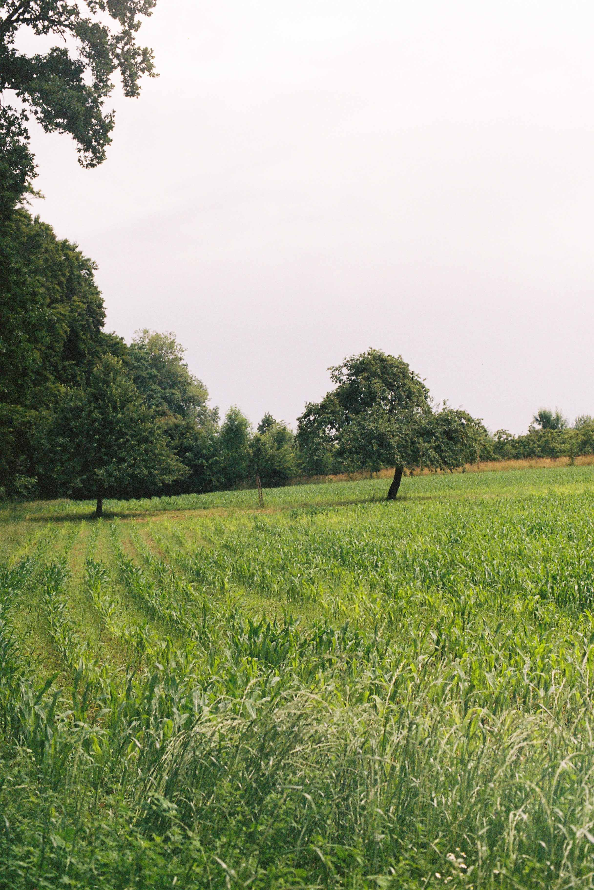
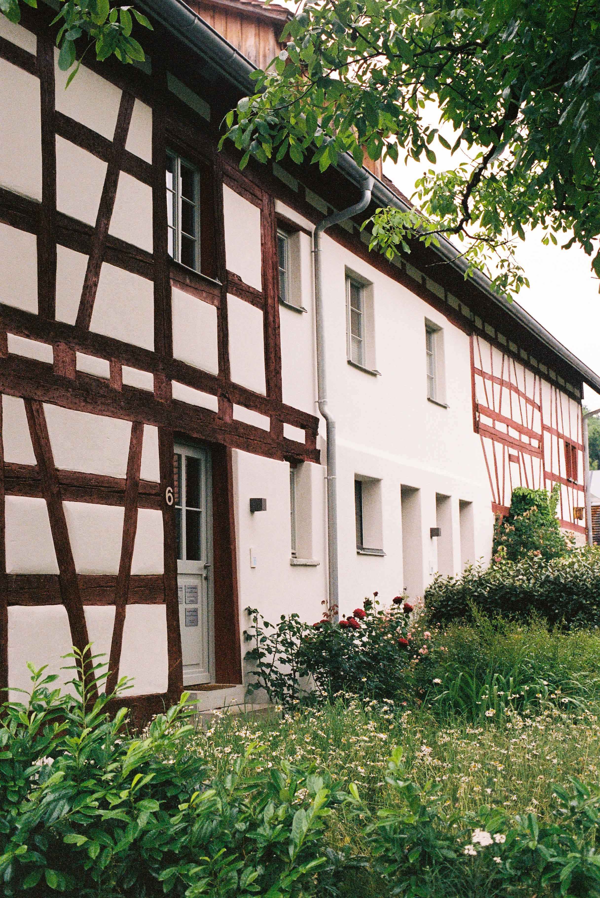

I like when we let the grass grow long,
I like when we let the wildness in.
When the lines aren't so clear,
When beauty seems to be near,
At least closer than before.
I enjoy the playfulness of spring,
The dance of color, the chase of green.
Because in the order of things,
Spring seems to get a pass.
We don't mind its intrusion,
Into places once made exclusive, and bordered.
And for us, I think this is how it should be.
Because you and I were meant to be free.
Maybe in order to regain the wide-eyed life of a child,
I must submit to becoming wild.
To surrender borders,
To truly find order.
And not the order of earthly children,
No, the oder of a Heavenly Father,
Who may just be wilder than we.

I've been agreeing with the birds a lot these days.
Singing for joy,
Feeling the Son's warmth,
Praising the Father.
I've been agreeing with the wildflowers a lot these days.
Feeling wild, untamed alive,
Eager to overrun the byways of monotony with color and life,
Worshipping the one of whom I'm his handiwork.
